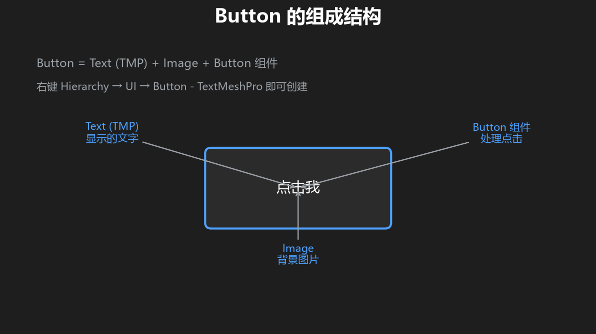
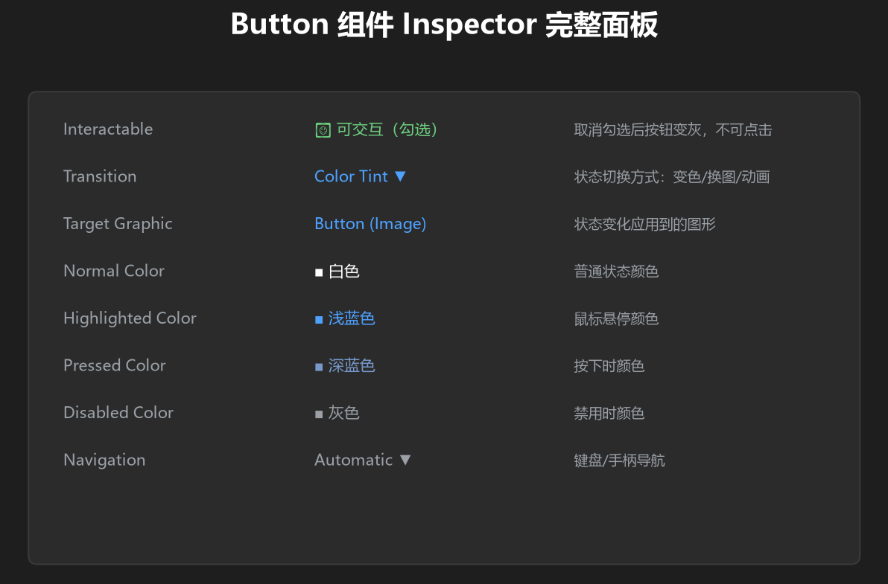
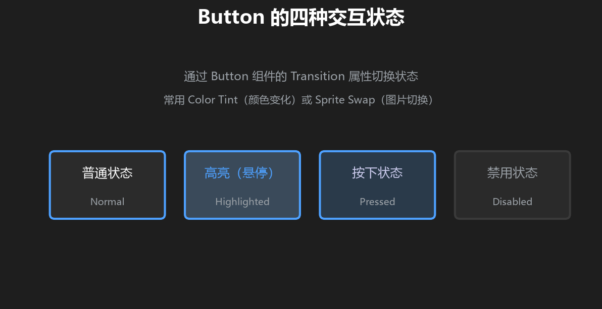
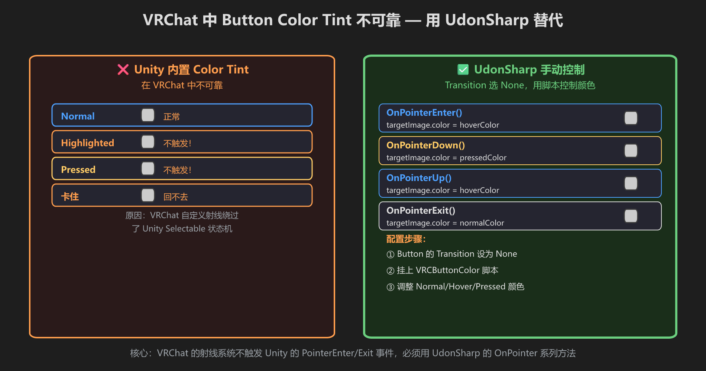
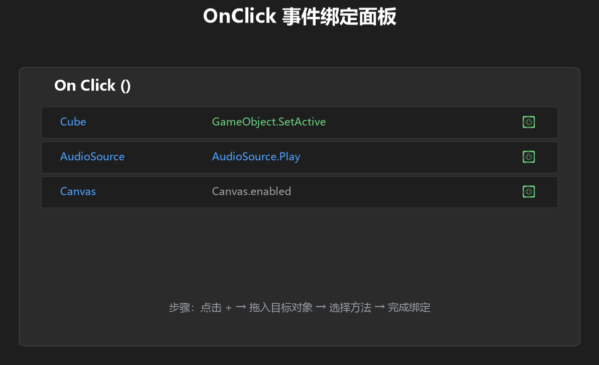
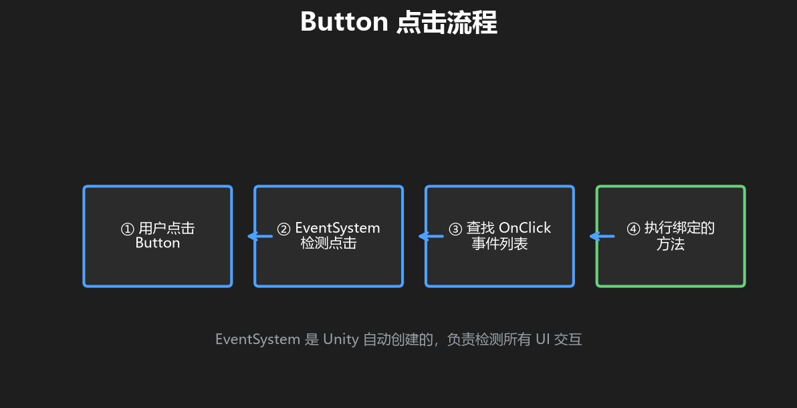

第 3 篇：Button 按钮与点击事件
前两篇学了 Canvas 和 Text。现在来学 UI 最核心的交互元素 — 按钮。
1. Button 不是"一个东西"，是三个组件拼出来的
当你在 Unity 里创建一个 Button，它实际上是一个 GameObject 上挂着两个组件，再加一个子物体。

图：Button 的解剖结构 — 一个父物体（Image + Button 组件）+ 一个子物体（Text）
| 部位 | 在哪里 | 干什么的 |
|---|---|---|
| Image 组件 | Button 父物体上 | 按钮的外观 — 背景颜色、图片、圆角 |
| Button 组件 | Button 父物体上 | 按钮的行为 — 能不能点、点了触发什么、颜色变化 |
| Text 子物体 | Button 下面挂着 | 按钮上显示的文字 |
2. 创建你的第一个按钮

图：选中 Button 后 Inspector 里看到的完整面板
- 在 Hierarchy 里选中 Canvas
- 右键 →
UI→Button - TextMeshPro - Canvas 下面出现一个 Button，Button 下面挂着一个 Text
- 把 Text 的文字改成「点我！」
3. Button 组件的关键属性
| 属性 | 作用 | 默认值 |
|---|---|---|
| Interactable | 能不能点。关了按钮变灰，点了没反应 | 勾上 |
| Transition | 状态变化方式：Color Tint（颜色）/ Sprite Swap（换图）/ Animation（动画） | Color Tint |
| Target Graphic | 哪个 Image 组件受 Transition 影响 | 自己的 Image |
| Navigation | 手柄/键盘导航时的焦点移动 — VRChat 手册要求设为 None，防止玩家移动时误触 UI | Automatic |
4. 按钮的四种颜色状态
当 Transition 选 Color Tint 时，按钮有四种视觉状态：

图：Normal / Highlighted / Pressed / Disabled 四种状态
| 状态 | 触发时机 | 默认颜色 |
|---|---|---|
| Normal | 鼠标不在按钮上 | 白色 |
| Highlighted | 鼠标悬停 | 浅蓝 |
| Pressed | 按下未松开 | 深蓝 |
| Disabled | Interactable 关闭时 | 灰色 |
⚠️ VRChat 中 Color Tint 可能表现不一致
上面说的 Color Tint 在 普通 Unity 项目 中完全正常。但在 VRChat 里，VRChat 使用自己的射线系统检测 UI 交互，和 Unity 编辑器的鼠标/键盘 Selectable 状态机不完全一致。常见的社区经验是：
- 悬停（Highlighted）有时不触发
- 按下（Pressed）颜色可能触发但退出时机不自然
- 个别情况下颜色会“卡住”回不去

社区常用方案：用 UdonSharp 的 OnPointerEnter/Exit/Down/Up 手动控制颜色，保证状态切换明确
稳妥做法：如果你发现按钮颜色状态在 VRChat 里不稳定，可以把 Button 的 Transition 设为 None，然后用 UdonSharp 的 Pointer 事件手动控制颜色。下面是一个参考脚本（需要把 targetImage 拖成按钮自己的 Image）：
// VRCButtonColor.cs — 挂在 Button 物体上
using UdonSharp;
using UnityEngine;
using UnityEngine.UI;
public class VRCButtonColor : UdonSharpBehaviour
{
public Color normalColor = Color.white;
public Color hoverColor = Color.red;
public Color pressedColor = Color.black;
public Image targetImage;
public override void OnPointerEnter() { if (targetImage) targetImage.color = hoverColor; }
public override void OnPointerDown() { if (targetImage) targetImage.color = pressedColor; }
public override void OnPointerUp() { if (targetImage) targetImage.color = hoverColor; }
public override void OnPointerExit() { if (targetImage) targetImage.color = normalColor; }
}记住：VRChat 世界里 Navigation 一定要设 None。Transition 可以根据实际测试选择，如果 Color Tint 不稳定，再用上面的 UdonSharp 脚本手动控制颜色。
5. OnClick — 按钮点了之后干什么

图：OnClick 事件面板 — 拖入目标物体，选择要调用的方法

图：从玩家点击到方法被调用的完整流程
- 找到 Button 组件最下面的 On Click ()
- 点 + 号添加一个条目
- 把挂有脚本的 GameObject 拖到「None (Object)」框里
- 右边的下拉菜单里选择脚本和具体方法
OnClick 只能看到public方法。VRChat 中，如果要用 UdonBehaviour，选SendCustomEvent并填方法名。
VRChat 限制：VRChat 世界里的 UI 事件并不能随意调用任意 MonoBehaviour 方法。官方允许的目标类型包括 Animator、AudioSource、GameObject.SetActive、Button/Slider/Toggle/ScrollRect 等部分属性，以及 UdonBehaviour 的RunProgram/SendCustomEvent/Interact。所以到 VRChat 阶段，我们通常把逻辑写进 UdonSharp，再用 OnClick →SendCustomEvent("方法名")。
6. 练手 — 做一个能计数的按钮
- Canvas 下创建
Button - TextMeshPro，文字改成「点击次数: 0」 - Canvas 下创建空物体 ClickCounter，挂 ClickCounter 脚本
using UnityEngine;
using TMPro;
public class ClickCounter : MonoBehaviour
{
public TMP_Text buttonText;
private int count = 0;
public void OnButtonClicked()
{
count++;
buttonText.text = "点击次数: " + count;
Debug.Log("按钮被点了第 " + count + " 次！");
}
}- 把 Button 下的 Text 拖到 ClickCounter 的 buttonText 字段
- Button 的 OnClick → 拖 ClickCounter → 选 OnButtonClicked
- 如果是 VRC 项目，Button 的 Navigation 设 None；Transition 若 Color Tint 不稳定，按上文用 UdonSharp 手动控制
- 运行游戏，狂点按钮！
- [ ] 按钮文字正确显示
- [ ] 鼠标悬停/按下时按钮颜色变化
- [ ] 每点一次按钮，数字 +1
- [ ] Console 里能看到日志输出
- [ ] VRC 项目：Navigation=None；Transition 若 Color Tint 不稳定，已用 UdonSharp 手动控制